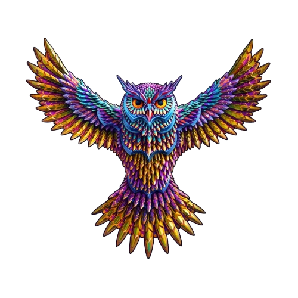

La música que nos encanta
Con la canción que cerró el EDC del día que nos conocimos para recordarte que cuando te sientas en tus peores momentos, sabes que siempre habrán nuevos momentos que nos den el boost para seguir viviendo.
Finale
Con la canción que cerró el EDC del día que nos conocimos para recordarte que cuando te sientas en tus peores momentos, sabes que siempre habrán nuevos momentos que nos den el boost para seguir viviendo.
Finale